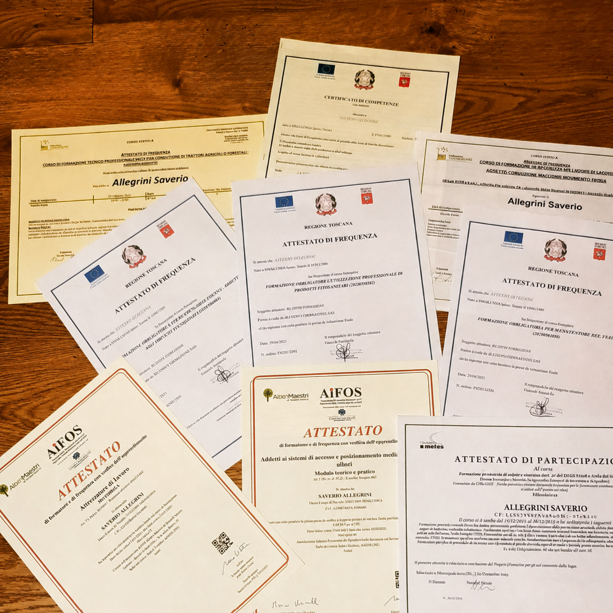

18
Anni di
esperienza
esperienza
500+
Clienti
soddisfatti
soddisfatti
10+
Certificati
& Patentini
& Patentini
Testimonanze
Cosa dice chi si è già affidato a noi
Di cosa ci occupiamo
Foto 01

La mia storia
Mi chiamo Saverio, il verde è sempre stato parte del mio percorso. Dopo il diploma come Perito Agrario, nel 2008 ho iniziato a lavorare nel settore, trasformando una passione in una professione.
Negli anni ho conseguito l'abilitazione come Perito Agrario, la certificazione regionale di Giardiniere d'Arte e Arboricoltore, oltre alle abilitazioni per i lavori in quota e l'utilizzo di piattaforme elevabili.
Nel 2021 ho aperto la mia impresa, portando con me un'esperienza costruita direttamente sul campo.
Credo in un modo di fare giardinaggio che unisce competenza, rispetto per la natura e attenzione ai cambiamenti climatici. Per questo progetto e realizzo giardini belli da vivere, ma anche sostenibili, privilegiando soluzioni che riducono il consumo d'acqua e semplificano la manutenzione nel tempo.
Ogni giardino racconta una storia diversa. Il mio obiettivo è valorizzarla, creando spazi verdi destinati a durare negli anni.
Vasta gamma di attrezzature per le esigenze di ogni giardino
Abbiamo ogni mezzo per realizzare il giardino che desideravi. Che si tratti di irrigazioni, abbattimenti o piantumazioni, abbiamo le conoscenze e i mezzi per consegnare anche la richiesta più difficile senza intoppi.
interveniamo tra Perugia e Siena
Confini provinciali: © OpenStreetMap contributors
Domande frequenti
Quanto costa la realizzazione o la manutenzione di un giardino?
Il costo varia in base alla superficie, al tipo di intervento e alle esigenze del cliente. Dopo un sopralluogo valutiamo attentamente il lavoro da eseguire e forniamo un preventivo chiaro, personalizzato e senza impegno.
Con quale frequenza è consigliabile effettuare la manutenzione del giardino?
Dipende dalle caratteristiche del giardino e dalle stagioni. In genere una manutenzione regolare permette di mantenere prato, piante e siepi sempre in salute, prevenendo interventi più impegnativi e costosi nel tempo.
Realizzate impianti di irrigazione che permettono di risparmiare acqua?
Sì. Progettiamo e installiamo impianti di irrigazione studiati per distribuire l'acqua in modo efficiente, riducendo gli sprechi e garantendo il corretto fabbisogno delle piante. Privilegiamo soluzioni sostenibili che semplificano anche la gestione del giardino.
In quanto tempo è possibile realizzare un nuovo giardino?
Le tempistiche dipendono dalle dimensioni del progetto e dalle lavorazioni previste. Dopo il sopralluogo forniamo una stima precisa dei tempi, organizzando ogni fase dell'intervento per consegnare il giardino nei tempi concordati e con la massima cura dei dettagli.